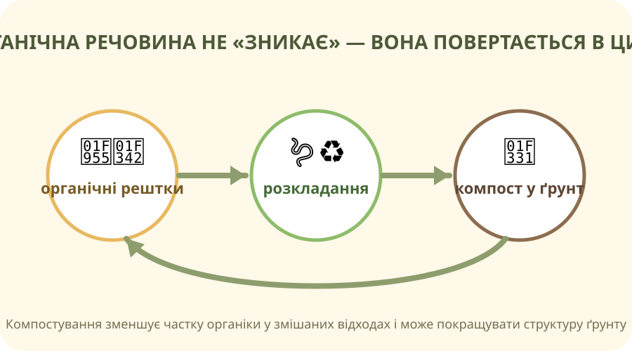

Одна територія — багато функцій

🌾 Поля
Їжа, корми, сировина. Але також ерозійний ризик, потреба у воді та поживних речовинах.

🟤 Ґрунт
Запас органічної речовини, води й поживних елементів. Родючість можна втрачати швидше, ніж відновлювати.

🌻 Рослинність
Культурні й дикі рослини захищають поверхню, впливають на водний режим і середовище живих організмів.
Реальні фото з Wikimedia Commons; для проєкту використовуйте їх як спостереження, а не як доказ причин.
Яке твердження коректніше?
Де в Україні земля виконує різні функції?
OpenStreetMap. Маркери — навчальні точки для порівняння типів землекористування, а не межі земельних ділянок.
ESA WorldCover / реальні геодані ↗
ESA WorldCover надає глобальне покриття суші з роздільністю 10 м на основі Sentinel‑1 і Sentinel‑2.
Планувальник землекористування
У Вас є 100 умовних гектарів. Розподіліть їх між ріллею, лісом/лісосмугами та природними ділянками. Модель навчальна: вона показує компроміси, а не замінює реальне планування.
Сума: 100%
Умовний баланс «виробництво ↔ захист ґрунту й біорізноманіття»
Посадити дерево — це не просто зробити фото
Оберіть найсильніший проєктний доказ
Міні-проєкт
Що повертаємо в цикл органічної речовини?

Позначте те, що зазвичай доречно для домашнього/шкільного компостування.
Клікніть кожен варіант.
Побачити земний покрив із супутника
Перед переглядом
Знайдіть відповідь на два питання:
- Які класи земного покриву можна розрізняти за супутниковими даними?
- Чому карта покриву не дорівнює оцінці «добре/погано використана земля»?
Для актуальних високороздільних глобальних карт наступником WorldCover є Copernicus Land Cover and Tropical Forest Monitoring.
Тепер збираємо поняття
Земельні ресурси
Частина суходолу, яку людина використовує або може використовувати, разом із властивостями ґрунтів, рельєфу, водного режиму та біоти.
Землекористування
Спосіб використання території: рілля, пасовища, ліси, забудова, природоохоронні землі тощо.
Стале використання
Отримання користі без руйнування здатності земель виконувати екологічні функції й підтримувати життя в майбутньому.
Чи можна збільшити площу ріллі без погіршення стану біосфери?
Проєкт на вибір
🌳 Варіант А — «Посади дерево»
Зробіть 1 слайд/постер: місце, вид, чому він підходить, схема догляду, як перевірите результат через 1–3 місяці.
♻️ Варіант Б — «Компост у моєму домі/школі»
Оцініть, які органічні відходи утворюються за день, запропонуйте схему збору й критерій успіху.